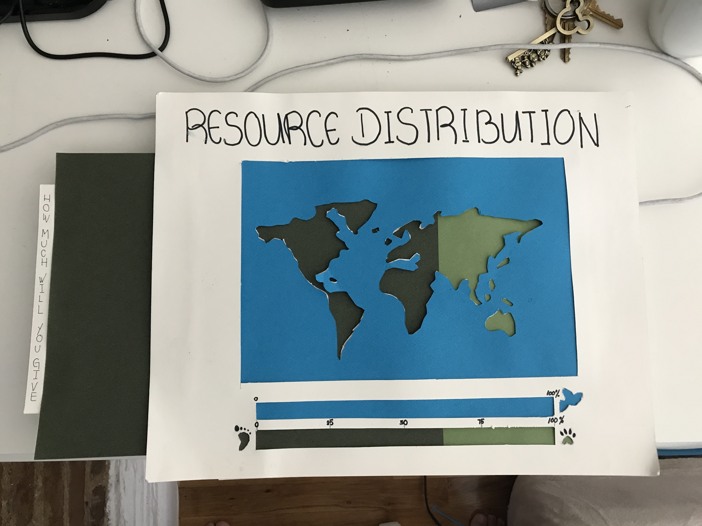
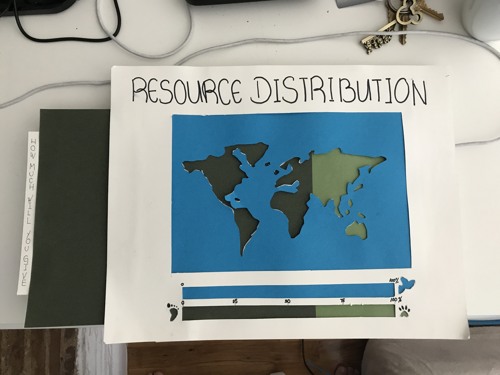

-
Sept 6,2017
12:20Endangered Species And Biodiversity
Sixth Mass Extinction
“The populations of nearly 9,000 vertebrate species, including mammals such as cheetahs, lions and giraffes, have significantly declined between 1900 and 2015. Almost 200 species have gone extinct in the past 100 years alone — a rate of two per year. The study says the losses are indicative of the planet's “ongoing six major extinction events” and has cascading consequences for human life on Earth.”
https://www.washingtonpost.com/news/speaking-of-science/wp/2017/07/12/earth-is-on-its-way-to-the-biggest-mass-extinction-since-the-dinosaurs-scientists-warn/?utm_term=.88cc08a90b62
Paul Ehrlich: “When the asteroid hit 66 million years ago, the asteroid wasn't making a choice. Now the driver is human overpopulation and overconsumption by the rich, and that's generally accepted.”
Extinction Countdown
"Extinction data revealed a rate of 100 to 1,000 species lost per million per year, mostly due to human-caused habitat destruction and climate change."
http://news.nationalgeographic.com/news/2014/05/140529-conservation-science-animals-species-endangered-extinction/
Why Save Endangered Species?
"Because we want to."
"Nature is beautiful, and that aesthetic value is a reason to keep it, just as we preserve artistic masterpieces like the Mona Lisa or Angkor Wat."
http://www.bbc.com/earth/story/20150715-why-save-an-endangered-species
De-extinction: Bringing Extinct Species Back to Life.
1. Backbreeding: finding living species that have traits similar to the extinct species
2. Cloning: Scientists take a preserved cell from a recently extinct animal and extract the nucleus.
3. Genetic engineering: Researchers would line up the genome of an extinct animal with that of its closest living relative.
George Church:"Bringing back the giants could help convert the Arctic tundra back to grasslands that existed during the last ice age. Reviving the mammoth help slow climate change by shifting the landscape back toward the grasslands"
http://www.sciencemag.org/news/2016/09/should-we-bring-extinct-species-back-dead
Joseph Bennett:"It’s better to spend the money on the living than the dead."
http://www.sciencemag.org/news/2017/02/bringing-extinct-species-back-dead-could-hurt-not-help-conservation-efforts
Ethics Behind De-extinction
Five Major Causes
H - Habitat Loss
I - Invasive Species
P - Pollution and Pesticides
P - Population and Pets
O - Over-Hunting and Over Collecting
http://www.worldanimalfoundation.org/endangered-species.html
Precedents
Consumer Purchases Affect Species

by Keiichiro Kanemoto and Daniel Moran Books:
Sapiens: A Brief History of Humankind
by Yuval Noah Harari
Extinction: The Causes and Consequences of the Disappearance of Species.
by Paul R. Ehrlich
Why Look at Animals
by John Berger
-
Sept 18,2017
16:50Prototype 1: Land Resource Distribution
 

Interview Questions
1. Do you like animals?
2. Are you aware of endangered animals?
3. Do you know the reason of species extinction?
4. How much space will you propose for nature?
5. How much space do you think we have for nature?

 Source from: Space For Nature: Zoological Society of London
Source from: Space For Nature: Zoological Society of London
https://www.youtube.com/watch?v=ptWmJhlhjNM&t=174s
User Test
“50-50 is fair”
“We should give all to them, we should live with animals”
“Does it include the insects like mosquitos?”
"They currently have 30 - 25 % of our land"
-
Sept 25,2017
13:20Prototype 2: Back to Wild
Interview Questions
1. Are you willing to live with animals?
2. Will it help if we bring wild life near to our daily life to let human care about the extinction?
3. Do you have any other proposed solution?
4. Do you take any action for global sustainability?
5. Are you aware that some of these animals kind are extinct?
User Test
“Human doesn't care. We are just to busy with our life”
“Living with animals is my dream"
“I'm a vegetarian"
“We are destroying their habitat if we live with them”
“I didn't feel anything. The feeling can be more extreme”
-
Oct 10,2017
16:00Prototype 3: Connected
Sketch
Concept Statement
The project aims to demonstrate the direct affect of human daily activities to wildlife habitat and animals. The project will use VR and projection mapping to tell a story and educate users. The goal of the project is to evoke sustainability thinking or act of the user that can be applied in daily day life.
-
Oct 18,2017
16:00
User test
Q:
1. Which part do you like?
2. What do you feel after knowing you are the one affecting the survival of animal?
3. Can you relate to yourself?
4. Would you think of changing your daily action?
A:
Shocked
"I just feel guilty"
"I didn't feel I'm the one who is doing the action"
-
Oct 26,2017
09:00Prototype 4: 1 Earth 2 World 3 Coexist
Design Questions
How might we shift from Human-centered design thinking to Sustainable design thinking?
Concept Statement
I want to create a interactive project that will demonstrate the direct effect of users’ decisions and consumption to wildlife habitat and animals. The project will use VR and projection mapping targeting to influence creators into sustainable design thinking.
-
Nov 6,2017
10:00How Americans Think About Climate Change, in Six Maps
"Most people believe in global warming, but most people believe that global warming won't harm them. 57% of the residence are worried about it. 31% of the adult don't discuss global warming with their family and friends"
https://www.nytimes.com/interactive/2017/03/21/climate/how-americans-think-about-climate-change-in-six-maps.html
Why humans are so bad at thinking about climate change
Per Espen Stoknes:"The 5Ds barriers that separate human with climate change: Distance, Doom, Dissonance, Denial, and iDentity"
Updated by Andy Murdock, University of California
https://www.vox.com/videos/2017/4/19/15346442/humans-climate-change-psychology
Green Guilt
"Environmental experts define green guilt as the knowledge that you could and should be doing more to help preserve the environment"
by By Ned Smith, BusinessNewsDaily Senior Writer http://www.businessnewsdaily.com/2385-green-environmental-guilt-growing.html
Trump Administration Moves to Open Arctic Refuge to Drilling Studies
"The Arctic refuge, which covers more than 30,000 square miles, has been closed off to commercial drilling for decades because of concerns about the impact on polar bears, caribou and other animals in the region. Opening it up has been a top priority for Republicans. Doing so, even to determine how much oil is available, would be politically explosive and set the stage for bitter fights between the administration and environmental groups."
By LISA FRIEDMAN https://www.nytimes.com/2017/09/16/climate/trump-arctic-refuge-drilling.html
Concept Statement
"I am creating an interactive storytelling project exploring the climate change through eyes of a polar bear to identify the list of human activity that produces hardly damage to wildlife habitat. The project aims to increase the awareness and influence human behavior through suggesting feasible solutions."
Prototype 4: Life of a Polar Bear